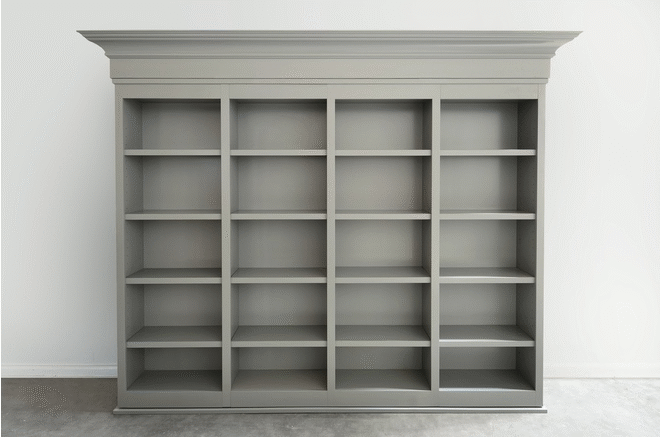

Carousel Template with Bootstrap 4
This is a free Carousel template made with the Bootstrap 4 framework. Click on the button below to stop / start the autoplay:

This is a free Carousel template made with the Bootstrap 4 framework. Click on the button below to stop / start the autoplay: